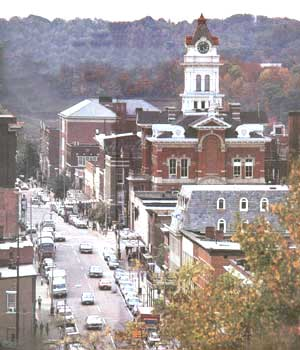

HARRY SNAVELY
The county's numerous parks and forests offer outdoors fans excellent hunting, fishing, boating and hiking. INSET: Ohio University's educational and cultural facilities are available to the community at large.